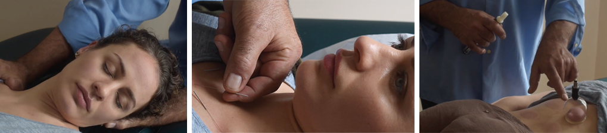

Treatment: An integrative practice
Healing through Acupuncture, Tui Na and Soft Tissue Unwinding
Acupuncture is balanced with Tui Na to provide a complete treatment. As tissues relax through massage, specific areas of tension can be more easily located and treated through the use of the acupuncture needles. Throughout the session, open communication encourages confidence in each step. Both traditional acupoint combination strategies, as well as trigger point (ashi) release, is utilized. The placement, depth and trajectory of the needle, in relation to a patient’s ease, is considered during all parts of the process.
Tui Na massage uses such techniques as pushing, rolling and traction to identify and mitigate where tension reside. The massage involves spiraling and wave-like techniques that help induce the free flow of Qi through the body. Energy is input, which is then interpreted diagnostically by the practitioner upon its return. This motion releases structural resistance, while creating a therapeutic connection between healer and patient.
Another modality sometimes used is Cupping, an ancient Chinese medical practice, also found in the West. The technique de-constrains local tissue through suction, breaking stasis and stagnation, and thereby re-establishing the flow of Qi through the area.
Treatment lasts over an hour, allowing time for communication, diagnosis, treatment and, most importantly, healing.
© Move Like Dragon